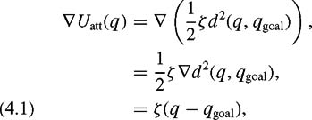
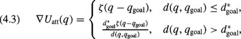
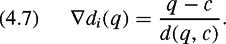

|
| |||||||||||||
|
|
||
The simplest potential function in is the attractive/repulsive potential. The intuition behind the attractive/repulsive potential is straightforward: the goal attracts the robot while the obstacles repel it. The sum of these effects draws the robot to the goal while deflecting it from obstacles. The potential function can be constructed as the sum of attractive and repulsive potentials
There are several criteria that the potential field Uatt should satisfy. First, Uatt should be monotonically increasing with distance from qgoal. The simplest choice is the conic potential, measuring a scaled distance to the goal, i.e., U (q) = ζ d(q, qgoal). The ζ is a parameter used to scale the effect of the attractive potential. The attractive gradient is . The gradient vector points away from the goal with magnitude ζ at all points of the configuration space except the goal, where it is undefined. Starting from any point other than the goal, by following the negated gradient, a path is traced toward the goal.
When numerically implementing this method, gradient descent may have "chattering" problems since there is a discontinuity in the attractive gradient at the origin. For this reason, we would prefer a potential function that is continuously differentiable, such that the magnitude of the attractive gradient decreases as the robot approaches qgoal. The simplest such potential function is one that grows quadratically with the distance to qgoal, e.g.,
with the gradient
| (4.1) | 
|
which is a vector based at q, points away from qgoal, and has a magnitude proportional to the distance from q to qgoal. The farther away q is from qgoal, the bigger the magnitude of the vector. In other words, when the robot is far away from the goal, the robot quickly approaches it; when the robot is close to the goal, the robot slowly approaches it. This feature is useful for mobile robots because it reduces "overshoot" of the goal (resulting from step quantization).
In figure 4.4(a), the goal is in the center and the gradient vectors for various points are drawn. Figure 4.4(b) contains a contour plot for Uatt; each solid circle corresponds to a set of points q where Uatt(q)is constant. Finally, figure 4.4(c) plots the graph of the attractive potential.
Note that while the gradient ∇Uatt(q) converges linearly to zero as q approaches qgoal (which is a desirable property), it grows without bound as q moves away from qgoal.If qstart is far from qgoal, this may produce a desired velocity that is too large. For this reason, we may choose to combine the quadratic and conic potentials so that the conic potential attracts the robot when it is very distant from qgoal and the quadratic potential attracts the robot when it is near qgoal. Of course it is necessary that the gradient be defined at the boundary between the conic and quadratic portions. Such a field can be defined by
| (4.2) |
|
and in this case we have
| (4.3) | 
|
where d*goal is the threshold distance from the goal where the planner switches between conic and quadratic potentials. The gradient is well defined at the boundary of the two fields since at the boundary where d(q, qgoal) = d*goal, the gradient of the quadratic potential is equal to the gradient of the conic potential, ∇Uatt(q) = ζ(q − qgoal).
A repulsive potential keeps the robot away from an obstacle. The strength of the repulsive force depends upon the robot's proximity to the an obstacle. The closer the robot is to an obstacle, the stronger the repulsive force should be. Therefore, the repulsive potential is usually defined in terms of distance to the closest obstacle D(q), i.e.,
| (4.4) |
|
whose gradient is
| (4.5) |
|
where the factor allows the robot to ignore obstacles sufficiently far away from it and the η can be viewed as a gain on the repulsive gradient. These scalars are usually determined by trial and error. (See figure 4.5.)
When numerically implementing this solution, a path may form that oscillates around points that are two-way equidistant from obstacles, i.e., points where D is nonsmooth. To avoid these oscillations, instead of defining the repulsive potential function in terms of distance to the closest obstacle, the repulsive potential function is redefined in terms of distances to individual obstacles where di (q)is the distance to obstacle , i.e.,
Note that the min operator returns the smallest d(q, c) for all points c in .
It can be shown for convex obstacles where c is the closest point to x that the gradient of di (q)is
| (4.7) | 
|
The vector ∇di (q) describes the direction that maximally increases the distance to from q (figure 4.6).
Now, each obstacle has its own potential function,
where Q*i defines the size of the domain of influence for obstacle . Then Urep(q) = ∑ni=1 Urepi(q). Assuming that there are only convex obstacles or nonconvex ones can be decomposed into convex pieces, oscillations do not occur because the planner does not have radical changes in the closest point anymore.
|
|
||
|